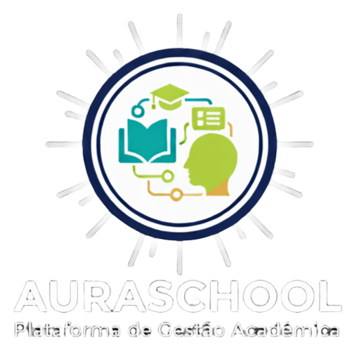

AuraSchool
O Auraschool é um grupo juvenil dedicado a promover o desenvolvimento e a aplicação de soluções tecnológicas inovadoras no ambiente escolar. Nossa equipe é composta por jovens talentos apaixonados por programação, cujo objetivo é criar e implementar projetos tecnológicos que contribuam para o aprimoramento da educação.
Com uma abordagem criativa e focada no impacto social, trabalhamos em parceria com escolas para oferecer experiências educativas que integrem tecnologia de forma eficaz, estimulando o aprendizado e preparando os estudantes para o futuro digital. No Auraschool, acreditamos que a tecnologia pode transformar a educação e buscamos, com cada projeto, tornar o processo de ensino-aprendizagem mais dinâmico, acessível e inspirador.

Gabriel Viana Dos Reis
Com habilidades tanto em frontend quanto backend, atua em todas as etapas do desenvolvimento, desde a criação de interfaces até a implementação de funcionalidades no servidor. Seu trabalho é fundamental para garantir a integração entre diferentes componentes dos projetos. alé de comandar a equipe dentro das progamações
Kauã Teles Santos
Responsável pela coordenação e planejamento das iniciativas do grupo, garantindo que todos os projetos sejam entregues dentro do prazo e atendam aos objetivos estabelecidos. Além disso, atua na comunicação com as escolas parceiras e na gestão das demandas do time. participando também da programação back end
Matheus Lopes Ferreira
Responsável pelo desenvolvimento da interface dos projetos, criando experiências interativas e visuais atraentes para os usuários. Seu trabalho assegura que os aplicativos e plataformas desenvolvidos sejam intuitivos e de fácil acesso para os estudantes e educadores..
Eduardo Granda
Especialista na construção e manutenção de servidores e bancos de dados. Foca no desenvolvimento de soluções robustas e escaláveis, garantindo que os sistemas criados pelo grupo funcionem de maneira eficiente e segura